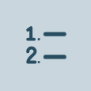
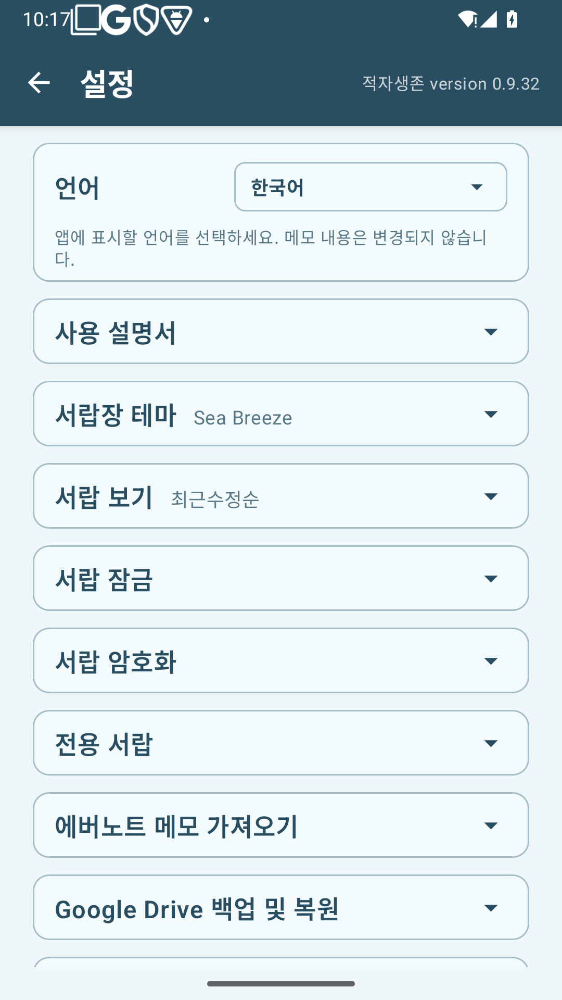
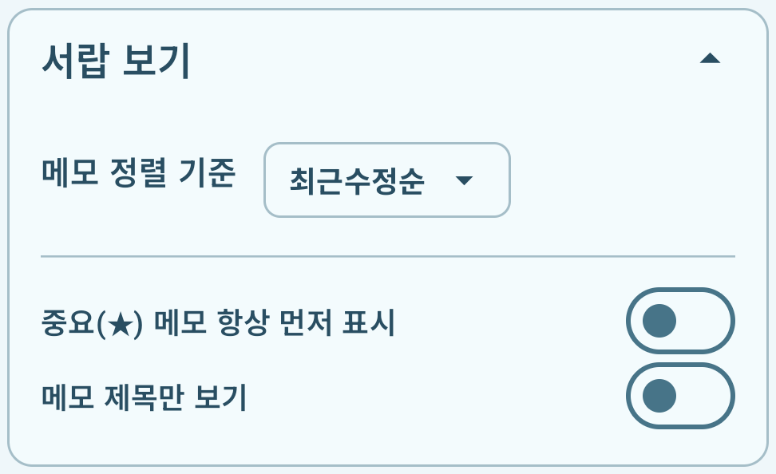

적자생존 사용 설명서
버전 0.9.32
생각은 메모로, 오늘의 계획은 할 일로, 장보기는 목록으로 남기세요. 이 설명서는 설정의 “사용 설명서” 카드에서 언제든 다시 읽을 수 있습니다.
1. 처음 사용하기와 화면 구성
적자생존은 주제별 서랍에 메모를 모아 두는 앱입니다. 서랍을 누르면 메모 목록이, 메모를 누르면 내용을 쓰는 화면이 열립니다.


자물쇠는 서랍의 잠금 상태를, 빨간 방패는 암호화 적용 여부를 나타냅니다.
서랍장 도구 보기
서랍장 이름 오른쪽 끝의 왼쪽 화살표(‹)를 누르세요. 왼쪽부터 새 서랍, 통합검색, 휴지통, 설정 아이콘이 나타납니다.  새 서랍 도구로 서랍을 추가합니다. 도구가 펼쳐져 있는 동안 서랍장 이름은 가려집니다. 오른쪽 화살표(›)나 뒤로가기로 접을 수 있습니다.
새 서랍 도구로 서랍을 추가합니다. 도구가 펼쳐져 있는 동안 서랍장 이름은 가려집니다. 오른쪽 화살표(›)나 뒤로가기로 접을 수 있습니다.
일반 서랍과 전용 서랍
아이디어·미분류 메모와 새 서랍 도구로 추가한 서랍은 일반 메모를 보관하는 일반 서랍입니다. 다이어리·오늘 할 일·쇼핑 리스트는 각각의 용도에 맞게 만들어진 전용 서랍입니다.
일반 메모는 다른 일반 서랍으로 옮길 수 있습니다. 전용 서랍 안의 메모는 다른 서랍으로 옮길 수 없습니다.
첫 메모 만들기
서랍장 화면에서 바로 메모를 적으려면 서랍장 아래의 ＋ 빠른 메모를 누르세요. 미분류 메모에서 시작하며, 메모 헤더의 서랍 이름으로 저장할 서랍을 고를 수 있습니다.
서랍을 정해 메모를 만들려면 기존 서랍을 열고 ＋ 새 메모를 누르세요. 새 서랍이 필요하면 다음 순서로 만드세요.
- 서랍장의 왼쪽 화살표(‹)로 도구를 펼치고
 새 서랍을 누릅니다.
새 서랍을 누릅니다. - 서랍 이름을 입력하고 만들기를 누릅니다.
- 만든 서랍을 열고 ＋ 새 메모를 누릅니다.
- 제목과 본문을 적습니다. 입력한 내용은 자동으로 저장됩니다. 뒤로가기로 목록에 돌아가 메모를 다시 열 수 있습니다.

어느 서랍을 사용할까요?
| 서랍 | 사용 목적 |
|---|---|
| 일반 서랍 | 아이디어·여행·업무처럼 주제별로 글·사진·그림·파일을 모읍니다. |
| 다이어리 | 날짜별 기록을 남기고 달력이나 기록 목록으로 다시 읽습니다. |
| 오늘 할 일 | 날짜별 할 일, 시간·알림·반복 일정과 완료 여부를 관리합니다. |
| 쇼핑 리스트 | 장보기별 물건·수량·구매 여부를 관리합니다. |
| 미분류 메모 | 아직 보관할 서랍을 정하지 않은 메모를 모읍니다. |
서랍장 이름 바꾸기
도구를 접은 상태에서 서랍장 이름 옆 작은 연필을 누르세요. 이름을 바꾸고 저장합니다.

넓은 화면과 전체 화면
태블릿이나 펼친 폴더블에서는 왼쪽 서랍장에서 서랍을 고르면 오른쪽에 메모 목록이 나타납니다. 메모를 열면 목록과 편집 화면을 나란히 볼 수 있습니다. 헤더의 전체 화면 버튼으로 편집 영역을 넓히고, 축소 버튼으로 두 칸 화면에 돌아옵니다.

2. 서랍 관리하기
새 서랍을 만들 때 이름·레이블 색·아이콘을 원하는 대로 정할 수 있습니다. 이미 만들어진 서랍도 서랍 설정에서 바꿀 수 있습니다.
서랍 설정 바꾸기
- 서랍장 화면에서 바꿀 서랍 오른쪽의 더보기(…)를 누릅니다.
- 서랍 설정을 선택합니다.
- 서랍 이름을 바꾸고, 레이블 색 탭에서 색 원을, 서랍 아이콘 탭에서 아이콘을 고릅니다.
- 위쪽 미리보기를 확인하고 저장을 누릅니다.
레이블에는 선택한 아이콘과 서랍 이름이 함께 표시됩니다. 긴 이름은 이름 영역 안에서 흘러갑니다.


미분류 메모의 더보기는 서랍 설정을 바로 엽니다. 서랍 암호화 방법은 서랍 암호화 안내를 참고하세요.
서랍 순서 바꾸기
서랍을 길게 누른 채 위아래로 끌어 원하는 위치에 놓습니다. 미분류 메모의 위치는 고정입니다.
서랍 삭제하기
더보기 → 서랍 삭제를 선택하고 안내를 확인하세요. 그 서랍에 있던 메모는 미분류 메모로 옮겨집니다. 암호화 서랍은 먼저 암호화 보호를 해제해야 삭제할 수 있습니다.
전용 서랍 다시 만들기
다이어리·오늘 할 일·쇼핑 리스트는 이름이나 아이콘을 바꿔도 전용 기능을 유지합니다. 삭제한 전용 서랍은 설정 → 전용 서랍에서 생성할 수 있습니다. 새로 만든 전용 서랍에 예전 메모가 자동으로 돌아오지는 않습니다.
↑ 목차로3. 메모 작성과 편집하기
새 메모와 자동 저장
서랍 안의 ＋ 새 메모는 현재 서랍에 메모를 만듭니다. ＋ 빠른 메모는 미분류 메모에서 시작하며, 처음 저장하기 전에 헤더의 서랍 이름을 눌러 저장할 서랍을 고르고 선택 버튼으로 확정할 수 있습니다. 오늘 할 일이나 쇼핑 리스트를 고르면 그 서랍에 맞는 목록 형식으로 바뀝니다.
저장 버튼 없이 입력한 변경 내용이 자동으로 저장됩니다. 뒤로가기로 목록에 돌아가도 작성한 내용을 다시 열 수 있습니다. 새 메모를 작성하고 닫으면 목록에서 그 메모가 보이는 위치로 이동합니다. 기존 메모를 열었다 닫으면 읽던 목록 위치를 유지합니다. 아무것도 입력하지 않은 새 메모는 그대로 닫으면 됩니다. 이미 저장된 메모의 제목이나 본문을 지우는 것은 내용 수정입니다. 메모 자체를 없애려면 휴지통으로 이동하세요. 저장 실패 안내가 나오면 내용을 확인하고 다시 시도하세요.
서랍별 보기와 정렬
서랍의 메모 목록 헤더에서 더보기(⋮)를 누르면 서랍 보기가 열립니다. 메모 정렬 기준, 중요 메모 항상 먼저 표시, 제목만 표시를 이 서랍에 맞게 선택하세요. 여기서 바꾼 값은 다른 서랍이나 전체 설정에 영향을 주지 않습니다.
별도로 지정하지 않은 항목은 설정 기본값 따르기로 동작합니다. 직접 바꾼 항목도 같은 문구를 눌러 전체 설정을 다시 따르게 할 수 있습니다. 기본값은 설정 → 서랍 보기에서 정합니다. 제목만 표시를 꺼 두면 본문과 첨부 미리보기, 날짜가 있는 기존 카드로 보입니다. 표시 방식만 바뀌며 메모 내용은 그대로입니다.
중요 메모 표시
메모의 별(☆)을 누르면 채워진 별(★)로 바뀝니다. 다시 누르면 해제합니다. 설정 → 서랍 보기에서 중요 메모를 먼저 표시하도록 정하거나, 각 서랍의 서랍 보기에서 따로 선택할 수 있습니다. 오늘 할 일 메모의 날짜 제목에는 메모 별표를 표시하지 않습니다. 목록 항목 뒤의 별은 해당 할 일·물건의 중요 표시입니다.
다른 서랍으로 옮기기
- 일반 메모를 열고 헤더의 서랍 이름 옆 이동 아이콘을 누릅니다.
- 옮길 일반 서랍을 선택한 뒤 이동 버튼을 누릅니다. 선택만으로는 이동하지 않으며 취소하면 현재 서랍을 유지합니다. 잠금이나 보호 해제 안내가 나오면 확인합니다.
오늘 할 일·쇼핑 리스트·다이어리의 메모는 다른 서랍으로 직접 옮길 수 없으며, 이동 아이콘을 표시하지 않습니다. 여러 메모를 한 번에 옮기는 방법은 여러 메모 선택하기를 참고하세요.
메모 편집 툴바 아이콘 안내
아래는 일반 메모의 툴바입니다. 연한 아이콘은 현재 사용할 수 없는 상태입니다. 글씨 서식은 바꿀 글자를 먼저 선택한 뒤 적용하세요. 오늘 할 일·쇼핑 리스트의 전용 도구는 6장과 8장에서 설명합니다.
위쪽 툴바: 되돌리기·첨부·음성
| 아이콘 | 이름 | 하는 일 |
|---|---|---|
| 되돌리기 | 현재 편집 중에 바꾼 본문 내용을 이전 상태로 되돌립니다. 되돌릴 내용이 없으면 연하게 표시됩니다. | |
 | 다시 실행 | 되돌린 본문 변경을 다시 적용합니다. 다시 적용할 내용이 없으면 연하게 표시됩니다. |
 | 카메라 | 사진을 새로 촬영해 메모에 첨부합니다. |
 | 사진 | 휴대전화에 있는 사진을 선택해 첨부합니다. |
 | 그림판 | 흰 캔버스에 그림을 그린 뒤 메모에 넣습니다. |
 | 붙여넣기 | 같은 메모에서 잘라낸 사진·그림을 현재 커서 위치에 넣습니다. 잘라낸 이미지가 있을 때만 활성화되며, 붙여넣으면 다시 비활성화됩니다. |
| 파일 첨부 | 파일을 선택해 메모에 첨부합니다. 첨부파일을 누르면 지원하는 앱으로 열 수 있습니다. | |
| 음성 입력 | 말한 내용을 글자로 입력합니다. 제목 또는 본문에서 음성 입력을 시작한 위치에 넣으며, 선택한 글자가 있으면 그 부분을 바꿉니다. | |
 | 녹음 첨부 | 목소리나 소리를 녹음해 음성 파일로 첨부합니다. STT와 달리 글자로 바꾸지 않습니다. |
아래쪽 툴바: 글씨 서식·목록·날짜
| 아이콘 | 이름 | 하는 일 |
|---|---|---|
 | 굵게 | 선택한 글자를 굵게 표시합니다. 다시 누르면 굵게 표시를 해제합니다. |
 | 기울임 | 선택한 글자를 기울여 표시합니다. 다시 누르면 해제합니다. |
 | 밑줄 | 선택한 글자에 밑줄을 넣습니다. 다시 누르면 해제합니다. |
 | 형광펜 | 선택한 글자 뒤에 노란색 배경을 넣어 강조합니다. |
 | 글자크기 | 글자 크기 메뉴를 열고 A−로 줄이거나 A+로 키웁니다. 바꿀 글자를 먼저 선택하세요. |
 | 글자색깔 | 검정·빨강·파랑 중 글자 색을 선택합니다. |
| 줄간격 | 본문의 줄 간격을 늘리거나 줄입니다. 글자 크기를 바꾸는 기능과는 다릅니다. | |
 | 체크박스 목록 | 현재 줄을 체크 목록으로 바꾸거나 체크 목록 형식을 해제합니다. 체크박스를 눌러 완료 여부를 표시할 수 있습니다. |
 | 글머리 목록 | 현재 줄을 점으로 시작하는 목록으로 바꿉니다. |
 | 번호 목록 | 현재 줄을 번호 목록으로 바꿉니다. 다음 항목의 번호는 자동으로 이어집니다. |
 | 타임스탬프 | 본문의 커서 위치에 현재 날짜와 시각을 넣습니다. |
제목에 커서를 두면 본문 서식 툴바가 숨겨지고, 본문을 누르면 다시 나타납니다. 화면이 좁으면 툴바를 좌우로 밀어 다른 도구를 볼 수 있습니다. 전체 화면에서는 양옆 툴바를 위아래로 밀 수 있습니다.
한 줄에는 체크박스·글머리·번호 목록 중 한 가지 형식만 적용합니다. 다른 목록 버튼을 누르면 형식이 바뀝니다. 번호 목록에서 엔터를 누르면 다음 번호가 이어지고, 빈 항목에서 엔터를 누르면 목록을 끝냅니다. 제목·본문과 첨부의 제한은 용량과 길이 제한에서 확인할 수 있습니다.
↑ 목차로4. 사진·그림·파일 첨부와 공유하기
사진·녹음·파일 넣기
일반 메모의 위쪽 툴바에서 카메라·사진·그림판·파일 첨부·녹음 첨부를 선택합니다. 필요한 기기 권한을 허용하고 촬영하거나 파일을 고르세요. 각 도구의 기능과 음성 입력·녹음 첨부의 차이는 메모 편집 툴바 안내를 참고하세요.
사진·그림의 위치 바꾸기
사진 오른쪽 위 더보기(…) → 위로 이동·아래로 이동으로 위치를 바꿉니다. 사진을 길게 누른 뒤 위아래로 끌어도 됩니다. 표시된 선이 놓을 위치이며, 화면 가장자리로 끌면 자동으로 스크롤합니다. 현재 편집 중에는 실행 취소로 이동을 되돌릴 수 있습니다.
원하는 본문 위치로 옮기려면 사진의 … 메뉴에서 잘라내기를 누르고, 본문의 옮길 위치를 누른 뒤 위쪽 툴바의 붙여넣기를 누르세요. 카메라 사진·갤러리 사진·그림판 이미지 모두 옮길 수 있습니다. 붙여넣기는 카메라·사진·그림판 다음에 있으며, 잘라낸 그림이 있을 때만 활성화됩니다. 다른 사진의 … 메뉴에서도 붙여넣을 수 있습니다. 이동은 같은 첨부를 옮기므로 사진 개수가 늘지 않습니다. 잘라낸 뒤 붙여넣지 않고 메모를 닫으면 해당 그림은 삭제됩니다.
사진 크게 보기
사진이나 그림을 누르면 크게 열립니다. 두 손가락으로 확대·축소하거나 두 번 눌러 확대하세요. 방향을 바꾸거나 그림을 그리려면 수정을 눌러 그림판을 여세요. 휴대전화의 갤러리 원본은 바꾸지 않습니다.
그림 그리기와 사진에 표시하기
- 빈 그림은 위쪽 툴바의 그림판에서 시작합니다. 사진 위에 표시하려면 사진을 크게 열고 수정을 누릅니다.
- 툴바에는 되돌리기·다시 실행·펜·색상 선택·지우개·굵기·왼쪽 회전·오른쪽 회전이 순서대로 있습니다. 화면이 좁으면 툴바를 좌우로 밀어 다른 도구를 볼 수 있습니다.
- 색상 선택에서 기본 색을 고르거나 색조·채도·밝기를 조절합니다. 굵기 버튼을 누르면 선과 원으로 표시된 다섯 가지 크기 중 선택할 수 있습니다. 펜과 지우개는 선택된 도구에 테두리가 표시됩니다.
- 지우개는 이번 편집에서 그린 선만 지우며, 아래 사진은 보존합니다. 이미 저장된 이미지에 합쳐진 예전 획은 따로 지울 수 없습니다.
- 툴바 끝의 회전 버튼으로 그림과 선을 함께 90도씩 돌립니다. 되돌리기·다시 실행으로 선과 회전을 되돌릴 수 있습니다.
- 빈 그림은 완료를 누르면 메모에 추가됩니다. 기존 사진을 수정한 경우 저장을 누르고 사본으로 저장 또는 원본 대체를 고릅니다. 취소하거나 닫을 때 변경 내용을 버릴지 선택할 수 있습니다.
사본으로 저장하면 원본 바로 뒤에 수정한 이미지가 추가되고 원본은 남습니다. 사진이 30개이거나 전체 첨부가 50개이면 사본으로 저장은 비활성화되며 이유가 표시됩니다. 이때도 기존 이미지의 원본 대체는 가능합니다.
원본 대체는 확인 후 메모 안의 기존 첨부를 수정한 이미지로 바꿉니다. 덮어쓰기 전 이미지로 되돌릴 수 없으므로 원본을 남기려면 사본으로 저장을 선택하세요. 저장한 이미지에는 획이 합쳐집니다. 편집·회전 저장 과정에서 해상도가 낮아질 수 있으므로 고해상도 원본은 따로 보관하세요.
읽기 전용 설명서와 지난 다이어리의 사진도 크게 볼 수 있습니다. 읽기 전용 상태의 확대 화면에는 닫기 버튼만 표시합니다.
PDF로 공유하기
- 메모를 열고 헤더의 공유 버튼을 누릅니다.
- 안드로이드 공유 창에서 카카오톡 등 원하는 앱과 받는 사람을 선택합니다.
제목·본문·글씨 서식·사진·그림을 PDF로 보냅니다. 받는 사람은 적자생존 없이도 읽을 수 있습니다. 녹음·일반 파일은 이름과 종류만 표시하며 원본 파일은 PDF에 포함하지 않습니다. 공유 창을 닫으면 보내지 않습니다. 보낸 PDF는 공유 시점의 사본이므로 이후 메모 수정이 반영되지 않습니다.
↑ 목차로5. 다이어리 기록하기
오늘 기록 이어 쓰기
다이어리 서랍을 열면 오늘 기록을 이어서 작성합니다. 날짜는 자동으로 표시하고 짧은 제목을 따로 적을 수 있습니다. 처음 내용을 입력하면 저장하며, 기록하지 않은 날의 빈 메모는 만들지 않습니다.
지난 기록 읽기와 수정하기
달력 아이콘에서 기록이 있는 날을 고르거나 기록 목록에서 엽니다. 지난 기록은 읽기 전용이며 사진 확대·중요 표시·공유·휴지통 이동은 가능합니다.
수정 잠금 해제를 누르면 그날의 기록을 보존하는 의미를 안내합니다. 아니오는 읽기 전용을 유지하고, 수정하기는 현재 열어 둔 기록의 편집을 허용합니다. 닫았다가 다시 열면 읽기 전용으로 돌아옵니다. 자정이 지나도 이미 쓰고 있던 기록은 화면을 닫기 전까지 저장할 수 있습니다.
다이어리는 다른 서랍으로 직접 이동하지 않습니다. 휴지통에서 복원해도 기록 날짜는 유지합니다. 서랍의 이름 변경과 재생성은 서랍 관리하기를 참고하세요.
↑ 목차로6. 오늘 할 일과 시간·알림·반복 설정
오늘·내일의 할 일 작성
오늘 할 일 서랍을 열어 날짜별 목록을 작성하세요. ＋ 새 메모를 누르면 오늘 목록을 엽니다. 오늘 목록이 이미 있으면 오늘 목록을 이어 쓰거나 내일 목록을 작성할 수 있습니다. 날짜별로 하나의 목록을 사용합니다.


항목 추가·완료·중요 표시
- 항목 추가(＋): 새 할 일을 추가합니다. 항목 이름을 쓰고 엔터를 눌러 다음 항목을 이어 쓸 수도 있습니다.
- 체크박스: 완료·미완료를 바꿉니다. 완료한 항목에는 취소선이 생깁니다.
- 항목 오른쪽 더보기(…): 시간 설정·알림 설정·반복 설정·중요 표시·항목 삭제를 엽니다.
- 중요 표시: 항목 메뉴에서 중요 표시를 켜거나 끕니다. 중요한 항목에는 별이 나타납니다.
- 항목 삭제: 선택한 한 줄만 지웁니다. 반복 항목을 지우면 앞으로의 반복도 중단됩니다. 메모 전체를 지우는 헤더의 휴지통 버튼과 구분하세요.
상단 도구로 설정하려면 먼저 바꿀 항목의 글자를 눌러 커서를 놓으세요. 시계·종·반복 버튼은 현재 항목에 적용됩니다. 사용할 수 없는 도구는 연하게 표시됩니다. 도구가 다 보이지 않으면 툴바를 좌우로 밀어 보세요.
항목 순서 바꾸기
상단의 위·아래 화살표가 겹친 항목 이동 모드를 켭니다. 항목 옆에 나타난 이동 손잡이를 길게 누르고 위아래로 끌어 놓으세요. 이동을 마치면 같은 버튼을 다시 눌러 글쓰기 모드로 돌아옵니다.

예정 시간 정하기
- 항목 오른쪽 … → 시간 설정을 누릅니다. 또는 항목에 커서를 놓고 상단 시계 버튼을 누릅니다.
- 시간을 정하고 확인합니다. 항목에 예정 시간이 표시됩니다.
- 없애려면 시간 설정을 다시 열고 시간 없음을 누릅니다.
시간을 정하는 것만으로 알림이 울리지는 않습니다. 알림을 원하면 별도로 설정하세요.


알림 받기
- 항목 오른쪽 … → 알림 설정을 누릅니다.
- 예정 시간이 있으면 정각·10분 전·30분 전 알림을 고릅니다. 예정 시간이 없거나 별도 시각에 받고 싶으면 알림 시각 직접 선택을 사용하세요.
- 저장합니다. 기기에서 알림 권한을 요청하면 허용하세요. 정확한 알림 허용 안내가 나오면 해당 기기 설정도 확인합니다.
선택한 시점은 왼쪽 원에 표시됩니다. 선택 목록 아래에는 필요한 권한과 알림 동작을 설명합니다. 해제하려면 알림 없음을 선택합니다. 예정 시간을 없애면 그 시간을 기준으로 한 알림도 해제됩니다. 직접 지정한 알림 시각은 별도로 관리합니다. 반복 항목에 설정한 알림은 이후 반복에도 적용됩니다.
알림에는 할 일 내용 대신 확인 안내를 표시합니다. 기기의 알림·절전 설정에 따라 도착이 늦을 수 있습니다. 캘린더 일정의 알림과 앱 알림은 별도이므로 7장도 확인하세요.
미완료 항목은 어떻게 되나요?
반복이 없는 미완료 항목은 다음 날짜 목록으로 이월되고, 완료한 항목은 이월되지 않습니다. 다음 날짜 목록이 이미 있으면 합쳐집니다. 원래 날짜의 기록도 남습니다.
반복 할 일 만들기
- 항목 이름을 적고 항목의 … → 반복 설정을 누릅니다.
- 매일·평일·주말·요일 선택 중에서 고릅니다. 요일 선택에서는 원하는 요일을 여러 개 고를 수 있습니다.
- 저장을 누릅니다. 항목의 설정을 다시 열어 변경할 수 있습니다.

예를 들어 목요일만 고르면 목요일마다 새 미완료 항목이 생깁니다. 지난번 완료 여부와 관계없이 반복합니다.
- 완료 체크는 그날의 완료 표시입니다. 이후 반복은 계속됩니다.
- 이름·요일·중요 표시 변경은 오늘 이후 미완료 반복 항목에 반영합니다. 과거 기록과 완료 항목은 유지합니다.
- 반복 안 함 또는 항목 삭제는 앞으로의 반복을 중단하며 미리 만든 미래의 미완료 반복 항목도 제거합니다.
- 며칠 뒤에 앱을 열면 오늘에 필요한 항목을 보완합니다. 반복만 있는 지난 날짜 목록을 모두 만들지는 않습니다.
반복 항목은 미완료 일반 항목처럼 매일 다음 날로 넘기지 않습니다. 같은 이름으로 따로 만든 반복 일정은 각각 관리됩니다. 캘린더에 연결한 항목은 반복 할 일로 바꿀 수 없습니다.
↑ 목차로7. 휴대전화 캘린더와 연결하기
휴대전화에 연결된 캘린더의 일정을 사용합니다. 캘린더 접근 권한을 허용해야 하며, 목록에 표시되는 캘린더를 선택합니다. 다른 캘린더 앱과의 직접 연동은 제공하지 않습니다.
| 기능 | 무엇을 하나요? |
|---|---|
| 캘린더에 등록 | 적자생존의 할 일을 캘린더 일정으로 보냅니다. 이후 업데이트는 캘린더 일정을 바꿉니다. |
| 캘린더에서 가져오기 | 캘린더의 오늘 일정을 오늘 할 일로 가져옵니다. 이후 캘린더에서 업데이트는 적자생존의 항목을 바꿉니다. |
할 일을 캘린더에 등록하기
- 오늘 또는 내일 할 일에서 보낼 항목에 커서를 놓고 상단의 캘린더에 화살표가 있는 등록 아이콘을 누릅니다.
- 캘린더·날짜·하루 종일 여부·시작과 종료 시간·알림을 확인해 등록합니다.
- 할 일을 수정한 뒤 같은 버튼에서 업데이트하면 연결된 기존 일정을 변경합니다.
등록한 항목에는 연동 표시가 나타납니다. 반복 할 일은 캘린더로 보낼 수 없습니다. 할 일을 완료하거나 삭제하거나 다음 날로 넘겨도 이미 등록한 캘린더 일정은 유지됩니다. 캘린더 일정 삭제는 캘린더 앱에서 하세요.
캘린더의 오늘 일정 가져오기
- 오늘 날짜의 할 일 목록을 열고, 상단 툴바에서 캘린더와 왼쪽 화살표가 그려진 가져오기 아이콘을 누릅니다. 도구가 다 보이지 않으면 툴바를 좌우로 밀어 보세요.
- 캘린더를 고르고 오늘 일정 중 필요한 항목을 체크해 가져옵니다.
- 최신 내용을 다시 가져오려면 해당 항목에 커서를 두고 상단 캘린더 아이콘을 누릅니다. 미리보기의 제목·시간·장소·캘린더를 확인한 뒤 캘린더에서 업데이트를 누릅니다.
가져온 일정의 제목과 시간·장소·캘린더 정보를 확인할 수 있습니다. 시간은 제목과 구분해 표시하며 종일 일정은 종일로 표시합니다. 이미 연결된 일정은 중복으로 가져오지 않습니다. 캘린더의 반복 일정은 오늘 회차만 가져옵니다. 완료 체크는 적자생존에서만 관리합니다.
↑ 목차로8. 쇼핑 리스트 사용하기
- 쇼핑 리스트 서랍에서 새 메모를 만들고 장보기 이름을 적습니다.
- 물건 이름을 입력하고 항목 뒤 수량(×숫자)을 누릅니다.
- −·＋ 버튼이나 숫자 입력으로 수량을 정합니다. 기본은 1이며 1~9999까지 입력합니다.
- 물건을 샀으면 앞 체크박스를 누릅니다. 꼭 살 물건은 별표를 켜세요.
장보기별로 목록을 여러 개 만들 수 있습니다. 항목을 추가하거나 순서를 바꾸는 방법은 항목 추가 · 항목 순서 바꾸기를 참고하세요. 쇼핑 항목 뒤에서는 수량·별표·삭제 버튼을 바로 사용할 수 있습니다. 쇼핑 리스트에는 반복 설정이 없습니다. 위젯 사용법은 홈 화면 위젯 사용하기를 참고하세요.
↑ 목차로9. 홈 화면 위젯 사용하기
위젯 추가
- 휴대전화 홈 화면의 빈 곳을 길게 누릅니다.
- 위젯 메뉴에서 적자생존의 오늘 할 일 또는 쇼핑 리스트를 선택합니다.
- 홈 화면에 놓고, 필요하면 길게 눌러 크기를 조절합니다. 제조사와 홈 화면 앱에 따라 추가 방법이 다를 수 있습니다.
위젯에서 할 수 있는 일
- 항목 줄을 누르면 완료·미완료 또는 구매·미구매가 바뀝니다.
- ＋는 앱의 빠른 추가 화면을 열어 해당 목록에 항목을 넣습니다.
- 제목이나 메모 열기를 누르면 앱에서 해당 메모를 엽니다.
- 별표·반복 아이콘은 표시용입니다. 중요 표시·반복·수량·순서 변경은 앱에서 합니다.
오늘 할 일 위젯은 오늘 날짜의 목록을, 쇼핑 위젯은 가장 최근 수정한 활성 목록을 보여 줍니다. 남은 개수는 미완료 항목 수이며 물건 수량의 합계가 아닙니다.
표시 순서
미완료 중요 → 미완료 일반 → 완료 중요 → 완료 일반 순서입니다. 같은 묶음 안에서는 원래 항목 순서를 유지합니다. 위젯 정렬은 메모 안의 순서를 바꾸지 않습니다.
잠긴 서랍의 위젯
서랍에 잠금을 설정하면 위젯은 내용을 숨깁니다. 앱에서 인증해 잠시 열어도 위젯의 숨김은 유지됩니다. 앱 열기로 내용을 확인하거나, 위젯에 다시 표시하려면 해당 서랍의 잠금 설정을 해제하세요. 잠금 중에도 반복 항목의 날짜 처리는 계속됩니다.
↑ 목차로10. 메모 찾기와 휴지통 관리하기
찾기 범위
| 찾기 버튼 위치 | 찾는 내용 |
|---|---|
| 서랍장 | 여러 서랍의 이름과 메모 제목·본문 |
| 서랍 안 | 현재 서랍의 메모 제목·본문 |
| 메모 안 | 현재 메모의 본문에서 일치하는 글자 |
서랍장에서 돋보기를 누르고 검색어를 입력한 뒤 결과의 서랍이나 메모를 누릅니다. 입력창 오른쪽의 진한 원 안 X는 입력한 검색어를 한 번에 지웁니다. 찾기 화면의 뒤로가기로 서랍장까지 나갔다 다시 찾기를 열면 빈 검색창에서 새로 시작합니다.
검색 결과에서 메모를 바로 열었다 뒤로가면 원래 검색어와 목록 위치를 유지한 검색 결과로 돌아옵니다. 검색 결과의 서랍을 거쳐 메모를 열었다면 뒤로가기로 메모 → 서랍 → 검색 결과 순서로 돌아갑니다. 넓은 화면에서 결과의 메모를 바로 열면 왼쪽에 검색 결과를 유지합니다. 화면을 접거나 펼쳐도 검색과 돌아갈 경로를 이어 갑니다.
서랍 안에서는 검색어가 있는 메모만 목록에 남습니다. 검색한 메모를 열고 돌아와도 검색 결과를 유지하며, 서랍에서 다시 뒤로가기를 누르면 검색이 종료되고 전체 목록이 나옵니다. 메모 안에서는 일치하는 글자를 강조하며 내용은 바뀌지 않습니다. 서랍과 메모 헤더의 검색 닫기 X는 해당 찾기를 닫습니다. 설명서 찾기는 설명서 이용하기에서 안내합니다.
잠긴 서랍은 기본 찾기 대상에서 제외됩니다. 잠긴 서랍 내용 검색 포함하기 (인증 필요)를 눌러 인증하면 포함할 수 있습니다. 암호화된 내용도 인증 후 찾습니다.
여러 메모 선택하기
- 서랍의 헤더에서 선택 버튼(체크 표시)을 누릅니다.
- 목록에서 처리할 메모를 선택합니다.
- 아래쪽의 서랍 이동 또는 휴지통으로 이동을 누릅니다. 서랍 이동에서는 목적지를 선택한 뒤 이동 버튼으로 확정합니다. 이동 가능한 일반 메모만 다른 서랍으로 옮길 수 있습니다.
작업 뒤 아래 안내에 실행취소가 표시되면 눌러 방금 작업을 되돌릴 수 있습니다. 기본 표시 시간은 약 5초이며 접근성 설정에 따라 길어질 수 있습니다. 선택을 끝내려면 뒤로가기를 누릅니다.

메모 하나를 휴지통으로 옮기기
메모 편집 헤더의 휴지통으로 이동 버튼을 누르고 확인합니다. 제목·본문·첨부가 없는 빈 메모에서는 버튼이 비활성화됩니다. 항목 뒤 X는 한 줄 삭제이고, 메모 헤더의 휴지통은 메모 전체 삭제입니다.
휴지통에서 복원하기
- 서랍장 헤더의 휴지통을 누릅니다.
- 메모 카드의 복원·영구 삭제 버튼이 있는 줄 왼쪽에서 원래 서랍의 아이콘과 이름을 확인합니다. 되살릴 메모의 복원을 누릅니다. 필요하면 먼저 메모를 열어 내용을 확인하세요.
- 원래 소속 서랍에서 복원한 메모를 확인합니다. 서랍 삭제 때 미분류 메모로 옮겨진 메모는 미분류 메모에서 확인합니다.
잠긴 서랍 메모를 보려면 상단의 잠긴 서랍 메모 포함하기 (인증 필요)로 인증합니다. 휴지통으로 옮긴 지 30일이 지나면 첨부와 함께 자동 영구 삭제됩니다. 기기 상태에 따라 정리 시점이 늦어질 수 있습니다. 30일 전에 복원하면 정리 대상에서 제외되며 다시 휴지통으로 옮기면 그때부터 새로 계산합니다.
↑ 목차로11. 서랍 잠금과 암호화하기
| 보호 방법 | 차이 |
|---|---|
| 서랍 잠금 | 지문 또는 4자리 PIN 인증으로 앱에서 내용을 여는 동작을 막습니다. |
| 서랍 암호화 | 메모 제목·본문·첨부를 암호화해 저장하며, 해당 자료는 백업과 휴지통에서도 암호화 상태를 유지합니다. |
오늘 할 일·쇼핑 리스트·미분류 메모·다른 앱 자료를 받는 백업 서랍에는 암호화를 적용하지 않습니다. 중요한 개인 기록은 암호화할 수 있는 일반 서랍에 보관하세요. 오늘 할 일·쇼핑 리스트에는 기본 잠금을 사용할 수 있습니다.
기본 서랍 잠금
설정 → 서랍 잠금에서 PIN·지문 사용·앱 전환 후 자동 잠금 시간을 설정합니다. 서랍장의 열린 자물쇠를 누르면 잠금을 설정하고, 잠긴 서랍을 누르면 인증해 엽니다. 위젯의 잠금 동작은 홈 화면 위젯 사용하기를 참고하세요.
처음 암호화 설정하기
- 보호할 일반 서랍의 더보기 → 서랍 암호화를 누릅니다.
- 12자 이상의 암호화 비밀번호를 두 번 입력하고 비밀번호 설정을 누릅니다. 4자리 잠금 PIN과 다른 비밀번호입니다.
- 표시된 복구 키를 종이나 비밀번호 관리 도구 등 앱 밖의 안전한 곳에 보관합니다.
- 보관 확인을 체크하고 비밀번호 설정을 눌러 완료합니다.
- 이 서랍은 아직 암호화되지 않았다는 안내에서 암호화 보호 사용을 눌러 적용합니다.
다른 서랍도 각각 더보기 → 서랍 암호화에서 인증하고 보호를 적용합니다. 암호화 서랍들은 같은 비밀번호를 사용하므로 처음 설정한 비밀번호와 복구 키를 사용합니다. 설정을 완료하기 전에 취소했다면 그때 본 복구 키는 사용하지 마세요.
방패 배지와 자물쇠 표시
서랍장 레이블과 서랍 안 제목 레이블의 오른쪽 위에 있는 빨간 방패·흰 체크 배지는 그 서랍에 암호화가 적용되었다는 표시입니다. 인증해 내용을 열어도 암호화는 유지되므로 배지는 사라지지 않습니다. 자물쇠는 인증을 거쳐 열어야 하는 서랍이라는 뜻이고, 방패는 자료를 암호화해 저장한다는 뜻입니다.
평소 서랍 열기와 자동 잠금
암호화된 서랍을 누르고 연결된 지문 또는 암호화 비밀번호로 인증합니다. 그 서랍 안에서는 메모를 열고 닫아도 열람 상태를 유지합니다. 서랍장으로 돌아가거나 다른 서랍을 선택하거나 화면을 끄면 다시 잠기며, 다른 앱으로 이동한 경우 자동 잠금 설정을 따릅니다. 폰을 접거나 펼치는 화면 전환은 작성 중인 내용을 이어 쓰기 위한 동작입니다.
지문 연결과 비밀번호 변경
설정의 서랍 암호화 카드에서 이 전화기의 지문 연결·재연결 또는 비밀번호 변경을 선택하고 인증합니다. 지문 연결은 현재 전화기에만 적용됩니다. 지문이나 기기 보안 설정이 바뀌어 사용할 수 없으면 비밀번호로 열어 다시 연결하세요.
비밀번호 변경은 모든 암호화 서랍에 적용됩니다. 변경 전에 만든 백업은 당시 비밀번호로 열어야 합니다. 변경 후 새 백업을 만들어 두세요.
비밀번호를 잊었을 때
- 인증 화면의 비밀번호를 잊으셨나요?를 누릅니다.
- 보관한 복구 키와 새 비밀번호를 입력하고 비밀번호 재설정하고 열기를 누릅니다.
새 비밀번호는 모든 암호화 서랍에 적용됩니다. 취소하면 원래 인증 화면으로 돌아갑니다. 복구 키는 앱에서 다시 보여 주지 않으므로 처음 설정할 때 정확히 보관하세요.
암호화 보호 해제와 서랍 삭제
서랍의 더보기 → 서랍 암호화 해제에서 인증한 뒤 서랍 이름을 확인하고 보호 해제를 누릅니다. 선택한 서랍의 자료가 암호화되지 않은 상태로 저장됩니다. 취소하면 보호를 유지합니다. 서랍을 삭제하려면 보호 해제를 마친 뒤 더보기에서 서랍 삭제를 선택합니다.
보호 범위 확인
- 서랍 이름·메모 개수·작성 및 수정 날짜·첨부 종류는 암호화하지 않습니다. 민감한 내용을 서랍 이름에 넣지 마세요.
- 백업 전체를 암호화하는 기능은 아닙니다. 암호화한 서랍의 내용만 보호되며, 일반 서랍과 오늘 할 일·쇼핑 리스트는 암호화되지 않습니다.
- 암호화 전에 만든 백업이나 외부 앱에 보낸 사본은 자동으로 암호화되지 않습니다. 외부 공유 파일은 직접 관리하세요.
12. 백업·복원과 에버노트 가져오기
로컬 파일에 백업하고 복원하기
- 설정 맨 아래의 로컬 백업 및 복원을 엽니다.
- 백업 파일 저장을 누르고 파일 앱에서 저장할 폴더와 파일 이름을 정합니다. .nonbackup 파일 하나에 서랍·메모·휴지통·설정과 첨부파일을 함께 보관합니다.
- 파일에서 복원을 누르고 저장한 백업 파일을 고릅니다. 날짜와 서랍·메모·첨부 개수 및 교체 안내를 확인합니다.
- 복원을 누르면 현재 자료를 백업 내용으로 교체합니다. 현재 자료와 합치는 동작이 아닙니다. 취소하면 적용하지 않습니다.
- 복원 직전 상태는 기기에 보관합니다. 마지막 복원 되돌리기로 돌아갈 수 있습니다.
로컬 기능은 Google 계정과 인터넷이 필요하지 않습니다. 파일 앱에서 기기 저장소나 SD 카드 등 원하는 위치를 고릅니다. PIN이 설정된 기기에서는 인증 후 진행합니다. 잠금 서랍 복원에는 이 기기의 PIN 설정이 필요하고, 암호화된 내용은 백업에서도 암호화 상태를 유지하므로 비밀번호·복구 정보를 보관하세요. 다른 서랍의 내용과 서랍 이름·날짜·개수는 암호화되지 않습니다. 파일 손상이나 검증 실패가 나면 복원하지 않습니다. Google Drive와 같은 형식을 사용하며 지원하는 구버전 백업도 읽을 수 있습니다.
Google Drive 백업은 수동 백업입니다
설정 → Google Drive 백업 및 복원에서 계정을 연결하고 지금 백업을 눌러야 새 백업이 만들어집니다. 계정 연결만으로 자동 백업하거나 여러 기기 내용을 실시간 동기화하지 않습니다. Google 계정 연결과 인터넷이 필요합니다.
서랍·메모·첨부·반복 설정과 휴지통에 남아 있는 메모도 백업에 포함합니다. 중요한 변경 뒤와 전화기를 바꾸기 전에 새 백업을 만들고 완료 안내를 확인하세요.
백업 보관과 삭제
새 백업이 정상 업로드되고 확인되면 최근 5개를 남기고 오래된 백업을 자동 영구 삭제합니다. 실패한 백업 때문에 기존 백업을 지우지는 않습니다. 보관 기준은 기간이 아니라 개수이므로 자주 백업하면 5개 모두 최근 자료일 수 있습니다.
직접 지우려면 백업에서 복원으로 목록을 열고 지울 백업의 삭제를 누릅니다. 파일 이름을 확인해 영구 삭제하면 되돌릴 수 없습니다. 현재 전화기의 메모는 지우지 않습니다. 오래 보관할 백업은 자동 정리 전에 별도로 보관하세요.
백업에서 복원하기
- 설정에서 백업을 보관한 Google 계정을 연결합니다.
- 백업에서 복원을 누르고 날짜와 자료 수를 확인해 선택합니다.
- 현재 메모와 서랍이 교체된다는 안내를 확인하고 복원을 누릅니다.
- 완료 후 서랍·메모·첨부가 정상적으로 열리는지 확인합니다.
새 전화기로 옮기기
- 기존 전화기에서 암호화 비밀번호를 확인하고 복구 키를 안전하게 보관합니다.
- 기존 전화기의 지금 백업으로 최신 자료를 올립니다.
- 새 전화기에 앱을 설치하고 같은 Google 계정에서 그 백업을 복원합니다. 일반 잠금 서랍이 있으면 새 전화기에서 먼저 PIN을 설정해야 합니다.
- 암호화 서랍은 백업 당시 비밀번호로 엽니다. 이전 전화기의 지문 연결은 이전되지 않으므로 새 전화기에서 다시 연결합니다.
- 제목·본문·첨부를 확인한 뒤 기존 전화기를 정리합니다.
에버노트 메모 가져오기
- PC의 에버노트 앱에서 옮길 노트나 노트북을 ENEX(.enex)로 내보냅니다. 본문 암호화가 있다면 먼저 해제합니다.
- ENEX 파일을 휴대전화의 다운로드 폴더 등에 복사합니다.
- 설정 → 에버노트 메모 가져오기 → ENEX 파일 선택에서 파일을 고릅니다.
- 미리보기에서 제목과 개수를 확인하고 에버노트 메모 가져오기를 누릅니다.
- 에버노트에서 가져온 메모 서랍에서 내용과 첨부를 확인하고 백업합니다.
제목·본문·체크 표시·기본 서식·첨부와 작성·수정 날짜를 가져옵니다. 태그와 원본 주소는 본문 끝에 표시합니다. 복잡한 표나 서식은 달라질 수 있으며 알림·작업·노트북 구조를 자동으로 변환하지 않습니다. 필요한 메모는 다른 일반 서랍으로 정리하세요.
같은 자료는 중복을 건너뛰지만 내용이나 수정 날짜가 바뀐 자료는 별도 메모로 추가될 수 있습니다. 에버노트와 자동 동기화하거나 기존 메모를 덮어쓰지 않습니다. 원본 메모와 ENEX 파일은 삭제하지 않습니다. 파일이 크거나 실패하면 작은 묶음으로 나누어 먼저 시험하세요. 지원 형식은 ENEX이며 제한은 용량과 길이 제한을 참고하세요.
본인 소유이거나 가져올 권한이 있는 자료를 선택하세요. 가져오기는 기기 안에서 처리하며, Google Drive 백업을 실행하면 가져온 자료도 백업에 포함됩니다. 원본 ENEX 파일은 서랍 암호화로 보호되지 않으므로 복사본도 관리하세요. 이 기능은 에버노트의 공식 제휴·인증 기능이 아닙니다. Evernote®는 Bending Spoons US Inc.의 상표입니다.
↑ 목차로13. 앱 설정과 설명서 이용하기
서랍장 헤더의 왼쪽 화살표(‹)로 도구를 펼친 뒤 톱니바퀴를 누릅니다. 설정에서는 카드 제목을 눌러 내용을 펼치거나 접습니다.

앱 언어
한국어·영어·일본어·힌디어·포르투갈어(브라질)·스페인어·인도네시아어를 지원합니다. 언어를 바꿔도 작성한 메모 내용은 바뀌지 않습니다.
서랍장 테마
미리보기 카드를 좌우로 밀어 원하는 테마를 누르세요. 기본 테마는 Sea Breeze입니다. 기본 테마에는 Sea Breeze, Blue Sky, Soft Green, Lavender Mist, Korean Paper, Honeycomb, Black and White, Classic Wood가 있고, 계절 테마에는 봄, 여름, 가을, 겨울, 크리스마스가 있습니다.

테마색은 화면과 앱 아이콘에 적용됩니다. 홈 화면의 앱 아이콘은 앱을 나간 뒤 화면을 껐다 켜면 반영됩니다. 홈 화면 앱에 따라 갱신이 늦을 수 있습니다. 예전에 Light Oak나 Warm Walnut을 사용했다면 Sea Breeze로 표시됩니다.
서랍 보기
메모 정렬 기준, 중요 메모 항상 먼저 표시, 메모 제목만 보기의 기본값을 정합니다. 메모 제목만 보기를 켜면 서랍 목록이 간결해져 더 많은 메모를 한 화면에서 볼 수 있습니다. 각 서랍에서 따로 지정한 항목은 해당 서랍의 선택을 유지합니다.

전용 서랍
다이어리·오늘 할 일·쇼핑 리스트와 다른 앱 자료를 받는 백업 서랍을 관리합니다. 실제 서랍 이름 옆 연필을 누르면 서랍 설정이 열립니다. 삭제한 전용 서랍은 생성 버튼으로 다시 만듭니다. 일반 서랍은 서랍장 헤더의  새 서랍 도구으로 만드세요.
새 서랍 도구으로 만드세요.

잠금·가져오기·백업
서랍 잠금, 서랍 암호화, 에버노트 메모 가져오기, Google Drive 백업 및 복원, 로컬 백업 및 복원에서 사용 방법과 주의할 점을 확인하세요.
로컬 백업 및 복원은 설정 맨 아래에 있습니다.
다른 앱의 자료를 받는 백업 서랍
백업 서랍은 IDEANU의 다른 앱이 보낸 자료를 받는 곳으로, 처음에는 숨겨져 있습니다. 설정 → 전용 서랍에서 표시하면 미분류 메모 아래에 나타납니다. 해당 앱의 안내에 따라 자료를 가져오세요. 적자생존 전체 자료를 보관하는 Google Drive·로컬 백업과는 별도 기능입니다.
설명서 읽기·찾기·공유
설정의 언어 카드 아래 사용 설명서를 누릅니다. 목차를 눌러 원하는 장으로 이동하고, 각 장 끝의 목차로 링크로 돌아올 수 있습니다. 사진을 누르면 크게 열리며 닫기로 본문에 돌아옵니다.
헤더의 찾기에서 검색어를 입력하면 일치하는 부분을 강조합니다. 결과 번호와 위·아래 화살표로 이동하고 X로 찾기를 닫습니다. 공유는 설명서를 PDF로 보냅니다. 설명 글과 화면 예시는 설정에서 선택한 언어로 표시됩니다. 아이콘 그림은 공통으로 사용합니다.
넓은 화면에서는 전체 화면 버튼으로 설명서를 넓혀 읽을 수 있습니다. 축소 또는 뒤로가기로 두 칸 화면에 돌아오고, 한 번 더 뒤로가면 설정에 돌아갑니다. 좁은 화면에서는 뒤로가기로 설정에 돌아갑니다.
설명 글과 공통 아이콘은 인터넷 없이도 볼 수 있습니다. 화면 사진은 설명서를 처음 열 때 선택한 언어의 사진만 내려받습니다. 한 번 받은 사진은 앱을 다시 열어도 오프라인에서 볼 수 있습니다. 사진을 받지 못하면 인터넷에 연결하고 사진 다시 받기를 누르세요. 사진을 받기 전에 PDF로 공유하면 아직 받지 않은 사진은 제외됩니다.
설명서를 열 때 새 사진이 있는지 확인합니다. 이미 받은 사진은 먼저 보여주며, 새 사진은 다운로드와 검증이 모두 끝난 뒤 교체합니다. 인터넷이 없거나 갱신에 실패하면 기존 사진을 그대로 볼 수 있습니다.
기능이 작동하지 않을 때
- 카메라·음성·녹음·캘린더가 열리지 않으면 기기 설정에서 해당 앱 권한을 확인하세요.
- 캘린더 목록이 비어 있으면 휴대전화 캘린더 앱의 계정과 표시할 캘린더를 확인하세요.
- 할 일 알림이 오지 않으면 기기 설정의 알림 허용과 절전 설정을 확인하세요.
- Google Drive 백업이 실패하면 인터넷 연결·연결 계정·저장 공간을 확인하세요.
- 로컬 백업 파일을 찾지 못하면 파일 앱에서 저장한 폴더와 .nonbackup 확장자를 확인하세요.
용량과 길이 제한
| 항목 | 제한 |
|---|---|
| 메모 제목·본문 | 제목 200자, 본문 30,000자. 본문 10,000자 이상은 나누어 적기를 권합니다. |
| 첨부 용량 | 파일 하나 30MB, 한 메모의 첨부 전체 200MB |
| 첨부 개수 | 한 메모에 전체 50개, 그중 사진 30장 |
| 사진·그림 | 사진 원본 4,000만 화소. 그림 편집·회전 저장은 긴 변 최대 2048픽셀 |
| 에버노트 가져오기 | ENEX 하나 100MiB(약 105MB), 메모 5,000개. 가져온 메모에도 제목·본문·첨부 제한이 적용됩니다. |
| 로컬·Google Drive 복원 | 백업 파일 최대 2GiB. 큰 백업은 시간과 저장 공간이 더 필요합니다. |
제한에 걸리면 안내를 확인해 메모나 파일을 나누세요. 녹음이 30분 이상이면 나누어 보관하기를 권하며 파일 용량 제한도 적용합니다. 백업·복원·첨부·암호화 작업 전에 전화기의 여유 공간을 확보하세요.
↑ 목차로